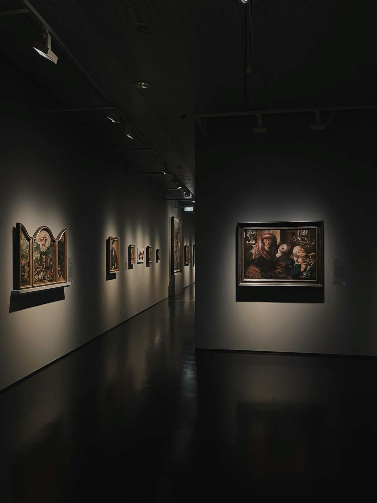

1900-an
Masa Awal
Ketika informasi disampaikan melalui surat, koran, mesin ketik, dan radio.
Lihat Koleksi →
ARSIP • SEJARAH • INDONESIA
Sebuah perjalanan digital untuk mengenal benda, arsip, dan cerita yang menjadi saksi perjalanan Indonesia dari masa ke masa.
TENTANG LORONGWAKTU
Sejarah tidak hanya tersimpan dalam buku. Mesin ketik, kamera, radio, koran, surat, hingga arsip foto pernah menjadi bagian dari kehidupan masyarakat Indonesia.
Melalui LorongWaktu, kita diajak melihat bagaimana benda-benda tersebut menjadi saksi perubahan zaman hingga lahirnya era Reformasi.
MENYUSURI MASA
Ketika informasi disampaikan melalui surat, koran, mesin ketik, dan radio.
Lihat Koleksi →Arsip dan benda yang mengingatkan kita pada perjalanan menuju Indonesia Merdeka.
Jelajahi →Sebuah perubahan besar yang membawa Indonesia memasuki babak baru.
Masuk ke Reformasi →Arsip bukan sekedar benda lama. Ia adalah ingatan tentang siapa kita, dari mana kita berasal, dan bagaimana kita sampai di hari ini.
- LorongWaktu